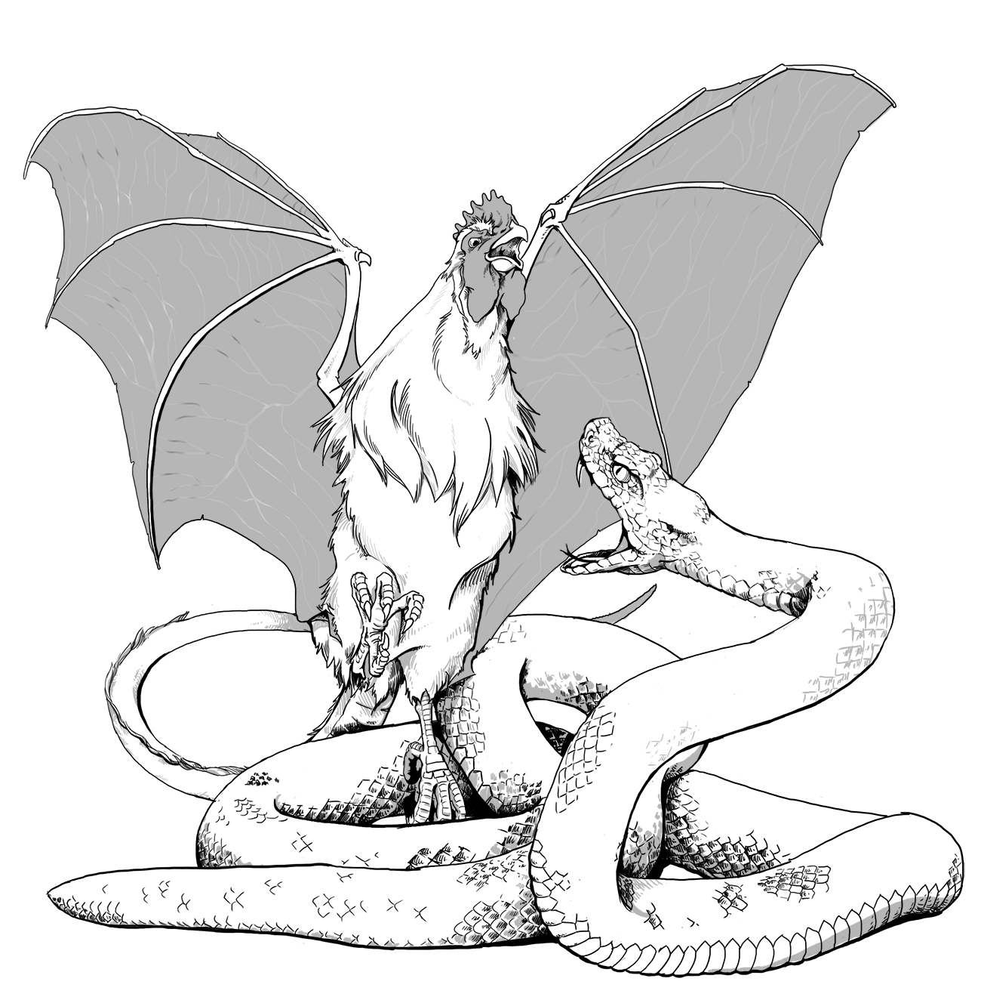

Complete Monster
by
Radaghast Kary
← Cobra flower
↑Index↑
Cockroach →

Illustration by Mariana Ruiz Villarreal,
Public Domain
Cockatrice
5e
Unaligned
D&D 5 facts
Size: Small
Type:
Monstrosity
CR: 1/2
D&D 5 sources
Monster Manual
, p 42
D&D 5 links
Cockatrice in 5e d20 SRD
Cockatrice on AideD&D
3e
TN
D&D 3.0 facts
Abilities: Str 6, Dex 17, Con 11, Int 2, Wis 13, Cha 9
AC: 14 (+1 size, +3 Dex)
Advancement: 6-8 HD (Small); 9-15 HD (Medium-size)
Attacks: Bite +4 melee
CR: 3
Damage: Bite 1d4-2
HD: 5d10 (27)
Initiative: +3 (Dex)
Organization: Solitary, flight (2-4), or flock (6-13)
Qualities: Petrification immunity
Reach: 5 ft. by 5 ft./5 ft.
Saves: Fort +4, Ref +7, Will +2
Size: Small
Skills: Listen +7, Spot +7
Speed: 20 ft., fly 60 ft. (poor)
Terrain: Any temperate and warm land and underground
Treasure: None
Type:
Magical Beast
D&D 3.0 links
Cockatrice in 3.0 d20 SRD
D&D 3.5 links
Cockatrice in 3.5e d20 SRD
Pathfinder 2 facts
Level: 3
Pathfinder 2 sources
Bestiary
Pathfinder 2 links
Cockatrice Monster in Pathfinder 2 SRD
0e
OD&D facts
Number Appearing: 1-8
AC: 6
Move: 9/18
HD: 5
Chance in Lair: 35%
Treasure: Type D
OD&D sources
Monsters & Treasure
, p 3
Chainmail sources
Chainmail
, p 36
N
S&W
facts
AC: [13]
Attacks: bite (1d3+special)
HD: 5
HDE: : 7
Move: 2 (6 when flying)
Special: Bite turns bitten into stone
XP: 600
S&W
sources
The Blue Book of Dangers and Dweomers
, p 81
{kind=link}